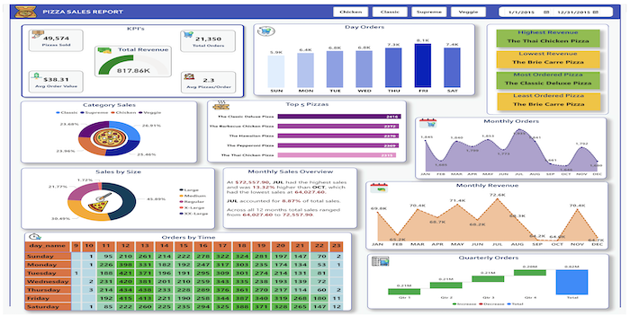

Datalicious Pizzeria: Slicing through Data for Business Success

Revolutionized pizza business strategies through a data-driven lens! • Analyzed customer traffic • Pinpointed peak hours for optimal staffing • Boosted operational efficiency • Unveiled customer preferences • Identified best-sellers & least sellers By delving into revenue trends and seasonal patterns, empowered informed forecasting and budgeting. Through engaging dashboards, transformed raw data into actionable insights, offering dynamic filtering options and visualizing key performance indicators.